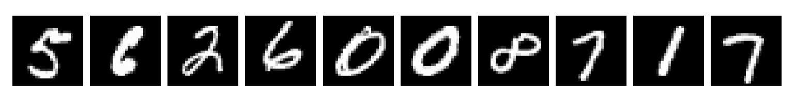
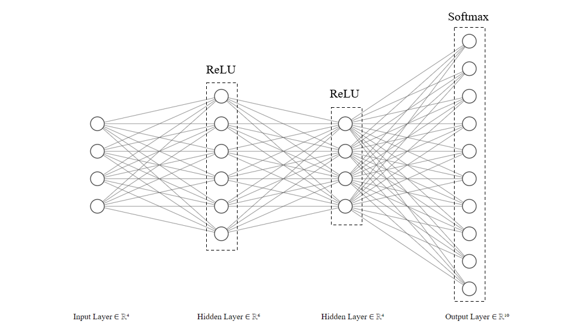
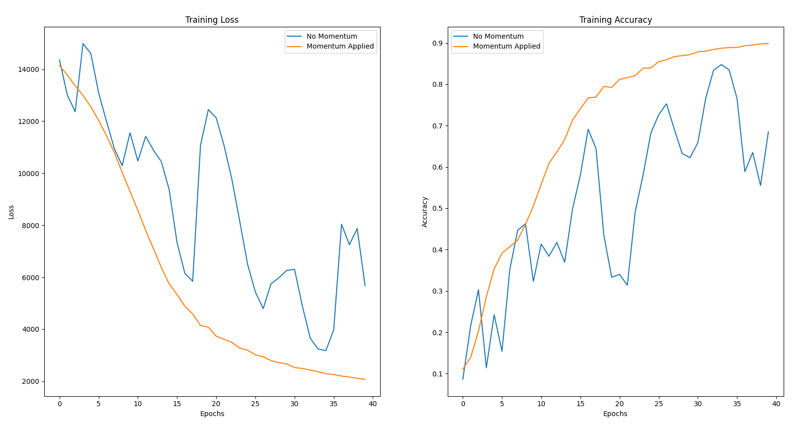

Neural Network from Scratch
Building a Neural Network in Python, without using any external ML frameworks.
Setting the Goal
The goal of this project was to build a simple neural network from scratch,
capaple of classifying images of handwritten digits with high accuracy.
The main purpose of building it from scratch was to better my own understanding of
the stuff that happens 'under the hood' with popular ML frameworks
like TensorFlow and PyTorch.
The MNIST Dataset
The MNIST dataset is a dataset of 70,000 28x28 grayscale images of handwritten digits.
Each image contains a singular digit from 0-9.
We separate these images into two sets: the training set and the test set.
We allocate 60,000 images for training and 10,000 images for testing the networks performance.

Many of the digits in the dataset are poorly drawn. For example they are not always clear [example 2]
and sometimes written at angles [example 7].
The Network (An Overview)
The type of Neural Network implemented in this project is a feedforward neural network.
This means that the data flows in one direction, from the input layer to the output layer.
In brief terms, the network is made up of layers of neurons, each of which is connected to the neurons in the next layer.
Each neuron has a weight and a bias, which are used to calculate the output of the neuron. The weights and biases are adjusted during training and is
what allows the network to learn.
Here is the process, split into distinct steps:
Initialisation
: Give the neurons in the network starting weights and biases.Forward Propagation
: Pass the input data through the network layers and obtain predictions.Compute Loss
: Pass the predictions through a loss function to measure the error of the network.Back Propagation
: Using partial derivatives, compute the gradient of the loss function with respect to each weight and bias in the network.Update Parameters
: Update the weights and biases in the direction that minimises the loss, using the Gradient Descent algorithm.Repeat
: Carry out steps 2-5 until the network converges sufficiently.
To better understand the overal structure of the network, here is a diagram of the network architecture. It is important to note
that the real network used in this project has 784 input neurons, each representing a single pixel of an image,
and a variable number of layers. This diagram is a simplified version. The output layer, however, must remain a fixed size of 10 neurons.
Each of the 10 neurons in the output corresponds to a probability that the input image is the digit represented by that neuron (0-9).

The Network (at it's Core)
Activation Functions
Activation functions transform each neuron's input to produce a corresponding output.
They also introduce non-linearity into the network, enabling it to learn complex patterns in the data.
Without activation functions, the network would behave like a simple linear model.
For this network, we use two activation functions: ReLU and Softmax, defined as follows:
\[
\text{Softmax}(z_i) = \frac{e^{z_i}}{\sum_{j=1}^n e^{z_j}}
\]
\[
\text{ReLU}(z) =
\begin{cases}
0 & \text{if } z \leq 0 \\
z & \text{if } z > 0
\end{cases}
\]
The ReLU function is used in the hidden layers of the network, while the Softmax function is used in the output layer. The Softmax
function is used to convert the output of the network into probabilities.
Loss Function
For this Network we are using the Categorical Cross-Entropy Loss function. This function is used to measure the error of the network.
It is defined as follows:
\[
L(y, \hat{y}) = -\sum_{i=1}^{n} y_i \cdot \log(\hat{y}_i)
\]
Here \(\hat{y}\) is the true label of the input data and \(y\) is the predicted label.
\(n\) is the number of classes in the dataset, which in this case is 10.
Gradient Descent
Gradient Descent is an optimisation algorithm used to minimise the loss function of the network.
It works by updating the weights and biases of the network, opposite to the direction of
the gradient of the loss function, with respect to the weights and biases.
This is an iterative process and can be defined by an update rule as follows:
\[
\begin{align*}
W_{\text{new}} &:= W_{\text{old}} - \alpha \frac{\partial L}{\partial W}\\
b_{\text{new}} &:= b_{\text{old}} - \alpha \frac{\partial L}{\partial b}
\end{align*}
\]
Here \(W\) and \(b\) are the weights and biases of the network,
\(L\) is the loss function, and \(\alpha\) is the learning rate. The learning rate is a hyperparameter
(a parameter that is set before training begins)
which determines how much the weights and biases are updated with each iteration.
Back Propagation
Back Propagation is how the network learns. It is the process of calculating the gradient of the loss function with respect to each weight and bias in the network.
There are many equations involved an they are dependent on the loss and activation functions used in the network.
One thing to notice is that each equation is dependent on a previous one, which is an application of the chain rule in calculus.
\[
\begin{align*}
\frac{\partial L}{\partial z_k} &= A_k - y_k\\
\\
\frac{\partial L}{\partial W_k} &= \frac{1}{m} \left( A_{\text{k-1}}^T \cdot \frac{\partial L}{\partial z_k} \right)\\
\\
\frac{\partial L}{\partial b_k} &= \frac{1}{m}\sum_{k=1}^{m} \frac{\partial L}{\partial z_k}
\end{align*}
\]
For the ReLU layer, the equations for the gradients are as follows:
\[
\begin{align*}
\frac{\partial L}{\partial Z_{k-1}} &= \left( W_k^T \cdot \frac{\partial L}{\partial Z_k} \right) \cdot \text{ReLU}'(Z_{k-1})\\
\\
\frac{\partial L}{\partial W_k} &= \frac{1}{m} \left( A_{\text{k-1}}^T \cdot \frac{\partial L}{\partial z_k} \right)\\
\\
\frac{\partial L}{\partial b_k} &= \frac{1}{m}\sum_{k=1}^{m} \frac{\partial L}{\partial z_k}
\end{align*}
\]
Optimising the Network
He Initialisation
It is important to correctly initialise weights in a neural network.
If weights are too small or too large, the network will not learn effectively.
He Initialisation reduces the variance of weights between layers, preventing gradients from exploding or vanishing.
It is defined as follows:
\[
W \sim N(0, \frac{2}{n_{in}})
\]
This denotes a normal distribution with a mean of 0 and a standard deviation of
\(
\sqrt{\frac{2}{n_{in}}}
\),
where
\(
n_{in}
\)
is the number of neurons in the previous layer.
Note that whilst biases are often initialised to 0, weights cannot be. This can be explained by looking at the equation for the output of a neuron:
\[
z = W \cdot X + b
\]
We can see that if the weights are initialised to 0, then
\(W \cdot X = 0.\) This means that the neuron output does not depend on the input \(X\) and so all neurons will output the same value.
This will result in the network failing.
Mini-Batch Gradient Descent
Mini-batch gradient descent is a variation of the gradient descent algorithm that splits the training dataset into small batches. These
batches are randomly sampled from the training set.
When data is processed in these small batches it means that the loss calculation as well as weight and bias updates are carried out with each mini-batch.
This is unlike batch gradient descent where the training set is processed as a whole unit.
This frequent updating can help the model find better generalisation since it prevents the model from being stuck in local minima or saddle points for too long.
Gradient Descent with Momentum
Gradient Descent with Momentum builds on the Gradient Descent algorithm.
It calculates an exponentially weighted average of the gradients which is used to update the weights and biases.
This allows for the network to converge much faster to the optimal solution as it dampens oscillations in the gradient.
The update rule for Gradient Descent with Momentum is as follows:
\[
\begin{align*}
V_{\delta w} &:= \beta \cdot V_{\delta w} + (1-\beta)\cdot \delta w\\
V_{\delta b} &:= \beta \cdot V_{\delta b} + (1-\beta)\cdot \delta b
\end{align*}
\]
\[
\begin{align*}
w &:= w-\alpha V_{\delta w}\\
b &:= b-\alpha V_{\delta b}
\end{align*}
\]
Here \(\delta \) is the momentum term, which is a hyperparameter that determines how much the previous gradients affect the current update.
The Results
Here are some of the results from training the network with a variety of different settings. Larger networks with more neurons and layers tend to perform better, but
also take longer to train. It's also important to note that just increasing the time of training does not always lead to better results. Train the network
for too long and the network will begin to overfit the training data and not generalise well to new data.
After a lot of tweaking and testing, the network managed to achieve an accuracy of 98.42% on the test set!
| Epochs |
Mini-Batch Size |
Neurons (Layer 1/.../Layer n) |
Learning Rate (\(\alpha\)) |
Momentum Applied |
Accuracy (%) |
| 20 |
128 |
200/100/25/10 |
0.5 |
True |
98.42 |
| 20 |
128 |
100/50/10 |
0.5 |
True |
98.14 |
| 20 |
128 |
100/50/10 |
0.5 |
False |
97.51 |
| 20 |
60000 |
100/50/10 |
0.5 |
True |
84.13 |
| 20 |
60000 |
100/50/10 |
0.5 |
False |
65.16 |
Visualising the Effects of Gradient Descent with Momentum
Comparing two identical networks, one with momentum and one without, its obvious that the network with momentum converges much faster and smoothly to the optimal solution.
